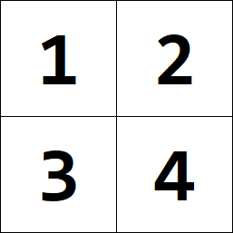
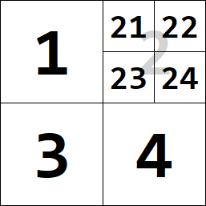
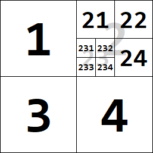

17. Vyhľadávanie¶
Zisťovanie druhej odmocniny¶
Ukážeme, ako zistíme druhú odmocninu čísla aj bez volania funkcie math.sqrt(x), resp. umocňovaním na jednu polovicu x**0.5. Prvá idea bude vychádzať z toho, že v cykle budeme postupne hľadať prvé také x, pre ktoré x*x (t.j. x**2) nie je menšie ako zadané cislo. Prvá verzia funkcie:
def odmoc(cislo):
x = 0
while x * x < cislo:
x += 1
return x
Takto nájdené riešenie môže byť dosť nepresné, lebo x zvyšujeme o 1, takže, napríklad odmocninu z 26 vypočíta ako 6. Skúsme zjemniť krok, o ktorý sa mení hľadané x:
def odmoc(cislo):
x = 0
while x * x < cislo:
x += 0.001
return x
Teraz dáva program lepšie výsledky, ale pre väčšiu zadanú hodnotu mu to trvá citeľne dlhšie - skúste zadať, napríklad 10000000. Keďže mu vyšiel výsledok približne 3162.278 a dopracoval sa k nemu postupným pripočítavaním čísla 0.001 k štartovému 1, musel urobiť vyše 3 miliónov pripočítaní a tiež toľkokrát testov vo while-cykle (podmienky x * x < cislo). Pre toto je takýto algoritmus nepoužiteľne pomalý.
Modul time¶
S týmto modulom sme sa už párkrát stretli na niektorých cvičeniach. Zhrňme pre nás najzaujímavejšie funkcie z tohto modulu:
funkcia
time.localtime()vráti momentálny dátum a čas v špeciálnom tvaretime.struct_time, ktorý je vlastne pomenovanou n-ticou; s touto štruktúrou môžeme pracovať podobne ako stuple, napríklad:>>> time.localtime() time.struct_time(tm_year=2019, tm_mon=11, tm_mday=27, tm_hour=8, tm_min=53, tm_sec=53, tm_wday=2, tm_yday=331, tm_isdst=0) >>> time.localtime()[:3] # momentálny dátum v tvare (rok, mesiac, deň) (2019, 11, 27) >>> time.localtime()[3:6] # momentálny čas v tvare (hodiny, minúty, sekundy) (8, 54, 17) >>> time.localtime()[6] # momentálny deň v týždni, kde pondelok má hodnotu 0, teda 2 označuje stredu 2
funkcia
time.time()vráti momentálny čas a dátum v tvare desatinného čísla (float); v skutočnosti je to počet sekúnd, ktoré uplynuli od nejakého konkrétneho času v minulosti (tzv. epocha); toto číslo vieme spätne previesť na dátum a čas (pomocoutime.localtime(číslo)) ale najčastejšie sa bude používať pri zisťovaní trvania (behu) nejakého výpočtu, napríklad:>>> start = time.time() # zapamätaj si momentálny čas v premennej start >>> # nejaký výpočet >>> koniec = time.time() # zapamätaj si momentálny čas v premennej koniec >>> koniec - start # koľko sekúnd ubehlo medzi týmito dvoma časmi 33.83050608634949 >>> time.localtime(start)[3:6] # čas start v tvare (hodiny, minúty, sekundy) (9, 7, 1) >>> time.localtime(koniec)[3:6] # čas koniec v tvare (hodiny, minúty, sekundy) (9, 7, 35)
funkcia
time.sleep(sekundy)pozdrží výpočet na zadaný počet sekúnd; je to niečo podobné akocanvas.after(milisekundy); napríklad:>>> start = time.time(); time.sleep(2.5); koniec = time.time() >>> koniec - start 2.500455379486084
meranie času výpočtu
Funkciu time.time() môžeme využiť na približné odmeranie času nejakého výpočtu. Napríklad takto:
import time
start = time.time()
# ... nejaký výpočet
print(round(time.time() - start, 3))
Okrem merania času môžeme zisťovať, napríklad aj počet prechodov nejakého cyklu. Otestujme teraz funkciu odmoc():
import time
def odmoc(cislo):
x = pocet = 0
while x * x < cislo:
x += 0.001
pocet += 1
return x, pocet
start = time.time()
x, pocet = odmoc(150000000)
print(round(x, 3), pocet, round(time.time() - start, 3))
Môžete dostať, napríklad:
12247.449 12247449 2.569
Čo označuje, že odmocnina z 150000000 je približne 12247.449, while-cyklus bežal 12247449 krát (kontroloval podmienku, pripočítal 0.001 k x a zvýšil počítadlo prechodov pocet) a trvalo mu to približne 2.569 sekundy.
Metóda bisekcie¶
Využijeme inú ideu:
zvolíme si interval, v ktorom sa určite bude nachádzať hľadaný výsledok (hľadaná odmocnina), napríklad nech je to interval
<1, cislo>(pre čísla väčšie ako 1 je aj odmocnina väčšia ako 1 a určite je menšia ako samotnécislo)ako
x(prvý odhad našej hľadanej odmocniny) zvolíme stred tohto intervaluzistíme, či je druhá mocnina tohto
xväčšia ako zadanécisloalebo menšiaak je väčšia (
xje už zbytočne veľké), tak upravíme predpokladaný interval, tak že jeho hornú hranicu zmeníme naxak je ale menšia, upravíme dolnú hranicu intervalu na
xtým sa nám interval zmenšil na polovicu
toto celé opakujeme, kým už nie je nájdené
xdostatočne blízko k hľadanému výsledku, t.j. či sa nelíši od výsledku menej ako zvolený rozdiel (epsilon)
Zapíšme to:
def odmoc(cislo, eps=0.0001):
pocet = 0
od, do = 0, cislo
x = (od + do) / 2
while abs(x ** 2 - cislo) > eps:
if x ** 2 > cislo:
do = x
else:
od = x
x = (od + do) / 2
pocet += 1
return x, pocet
x, pocet = odmoc(150000000)
print(round(x, 3), pocet)
Do funkcie sme pridali aj počítadlo prechodov while-cyklu. V tomto prípade nemá zmysel zistovať čas výpočtu tejto funkcie, lebo počet prechodov tohto cyklu je len 52, čo je výrazné zlepšenie oproti predchádzajúcemu riešeniu, keď prechodov while-cyklom (hoci jednoduchších) bolo vyše 12 miliónov.
Hľadanie údajov¶
Predpokladáme, že máme telefónny zoznam s 1000000 účastníkmi, teda zoznam dvojíc (meno, číslo). Ak takýto zoznam nemáme usporiadaný podľa abecedy, keď potrebujeme nájsť nejakého účastnika, musíme prejsť celý zoznam. Napríklad:
def zisti(zoznam, hodnota):
for meno, cislo in zoznam:
if meno == hodnota:
return cislo
return 'nenasiel'
Aby sme takýto algoritmus mohli jednoduchšie testovať, budeme hľadať konkrétnu hodnotu v náhodnom zozname celých čísel. Napríklad:
import random
import time
def zisti(zoznam, hodnota):
for prvok in zoznam:
if prvok == hodnota:
return True
return False
n = 2000
t = [random.randrange(n) for i in range(n)]
start = time.time()
for i in range(n):
zisti(t, i)
cas = time.time()-start
print(round(cas, 3))
Program teraz vygeneruje zoznam 2000 náhodných čísel z intervalu <0, 1999> a potom pre každé číslo z takého intervalu skontroluje, či sa nachádza v takomto náhodnom zozname, t.j. 2000-krát zavolá hľadanie čísla v 2000-prvkovom náhodnom zozname. Tento test spustime viac krát pre rôzne n:
for n in 2000, 4000, 8000, 16000, 32000, 64000:
t = [random.randrange(n) for i in range(n)]
start = time.time()
for i in range(n):
zisti(t, i)
cas = time.time()-start
print(n, round(cas, 3))
Teraz sú tie výsledky zaujímavejšie:
2000 0.119
4000 0.441
8000 1.9
16000 7.173
32000 28.545
64000 113.392
Môžeme vidieť, že keď sa zdvojnásobí veľkosť zoznamu a teda aj počet volaní tejto funkcie, tak sa výsledný čas zväčší približne štyrykrát. Aj bez skúšania na počítači by sme vedeli určiť približný čas výpočtu, napríklad pre 128000 alebo 256000 prvkové zoznamy. Bolo by to približne 450 a 1800 sekúnd.
Ak by nejaká telefónna firma používala takýto pomalý program na zisťovanie telefónnych čísel, tak by zákazníci neboli veľmi spokojní. Zrejme múdre programy na prehľadávanie telefónnych zoznamov používajú nejaké lepšie stratégie. V prvom rade sú takéto zoznamy usporiadané podľa mien, vďaka čomu sa bude dať hľadať oveľa rýchlejšie - budeme tomu hovoriť binárne vyhľadávanie.
Binárne vyhľadávanie¶
Použijeme podobnú ideu, akou sme na začiatku prednášky riešili úlohu na zisťovanie druhej odmocniny nejakého čísla. V tomto prípade využijeme ten fakt, že v reálnom telefónnom zozname sú všetky mená usporiadané podľa abecedy. Vďaka tomu, ak by sme si vybrali úplne náhodnú pozíciu v takomto zozname, na základe príslušnej hodnoty v tabuľke, sa vieme jednoznačne rozhodnúť, či ďalej budeme pokračovať v hľadaní v časti zoznamu pred touto pozíciou alebo za. Nebudeme ale túto pozíciu voliť náhodne, vyberieme pozíciu v strede zoznamu.
Ukážme to na príklade: máme telefónny zoznam, ktorý je usporiadaný podľa mien. Pre lepšie znázornenie použijeme len dvojpísmenové mená, napríklad tu je utriedený 13-prvkový zoznam a ideme v ňom hľadať meno 'hj' (možno Hraško Ján):
0 |
1 |
2 |
3 |
4 |
5 |
6 |
7 |
8 |
9 |
10 |
11 |
12 |
|
ab |
ad |
dd |
fm |
hj |
jj |
ka |
kz |
mo |
pa |
rd |
tz |
zz |
|
zac |
stred |
kon |
Označili sme tu začiatok a koniec intervalu zoznamu, v ktorom práve hľadáme: na začiatku je to kompletný zoznam od indexu 0 až po 12. Vypočítame stred (ako (zac+kon)//2) - to je pozícia, kam sa pozrieme úplne na začiatku. Keďže v strede zoznamu je meno 'ka', tak zrejme všetky mená v zozname za týmto stredom sú v abecede vyššie a teda 'hj' sa medzi nimi určite nenachádza (platí 'hj' < 'ka'). Preto odteraz bude stačiť hľadať len v prvej polovici zoznamu teda v intervale od 0 do 5. Opravíme koncovú hranicu intervalu a vypočítame nový stred:
0 |
1 |
2 |
3 |
4 |
5 |
6 |
7 |
8 |
9 |
10 |
11 |
12 |
|
ab |
ad |
dd |
fm |
hj |
jj |
ka |
kz |
mo |
pa |
rd |
tz |
zz |
|
zac |
stred |
kon |
Stredná pozícia v tomto prípade padla na meno 'dd'. Keďže 'hj' je v abecede až za 'dd' (platí 'dd' < 'hj'), opäť prepočítame hranice sledovaného intervalu a tiež nový stred:
0 |
1 |
2 |
3 |
4 |
5 |
6 |
7 |
8 |
9 |
10 |
11 |
12 |
|
ab |
ad |
dd |
fm |
hj |
jj |
ka |
kz |
mo |
pa |
rd |
tz |
zz |
|
zac |
stred |
kon |
Už pri tomto treťom kroku algoritmu sa nám podarilo objaviť pozíciu hľadaného mena v zozname: stred teraz odkazuje presne na naše hľadané slovo.
Ak by sa hľadané slovo v tomto telefónnom zozname nenachádzalo (napríklad namiesto 'hj' by sme hľadali 'gr'), tak by algoritmus pokračoval ďalšími krokmi: opäť porovnáme stredný prvok s našim hľadaným ('gr' < 'hj') a keďže je v abecede pred ním, zmeníme interval tak, že zac == kon == stred:
0 |
1 |
2 |
3 |
4 |
5 |
6 |
7 |
8 |
9 |
10 |
11 |
12 |
|
ab |
ad |
dd |
fm |
hj |
jj |
ka |
kz |
mo |
pa |
rd |
tz |
zz |
|
stred |
A to je teda už definitívny koniec behu algoritmu (interval je 1-prvkový): keďže tento jediný prvok je rôzny od hľadaného 'gr', je nám jasné, že sme skončili so správou „nenašli“.
Zapíšme tento algoritmus do Pythonu:
def zisti(zoznam, hodnota):
zac = 0 # zaciatok intervalu
kon = len(zoznam) - 1 # koniec intervalu
while zac <= kon:
stred = (zac + kon) // 2 # stred intervalu
if zoznam[stred] < hodnota:
zac = stred + 1
elif zoznam[stred] > hodnota:
kon = stred - 1
else:
return True
return False
Ak by sme teraz spustili rovnaké testy ako pred tým so sekvenčným vyhľadávaním, boli by sme milo prekvapení: čas na hľadanie v 1000-prvkovom zozname a 1000000-prvkovom zozname je skoro stále rovnaký a sú to len tisíciny milisekúnd.
Predpokladajme, že náš telefónny zoznam má 1000000 účastníkov. Zrejme po prvom prechode while-cyklu sa veľkosť prehľadávaného intervalu zmenší na polovicu, teda 500000. Keď budeme takto pokračovať, veľkosť intervalu sa bude postupne zmenšovať:
na začiatku 1000000 účastníkov
po 1. porovnaní: 500000 úsek
po 2. porovnaní: 250000 úsek
po 3. porovnaní: 125000 úsek
po 4. porovnaní: 62500 úsek
po 5. porovnaní: 31250 úsek
po 6. porovnaní: 15625 úsek
po 7. porovnaní: 7812 úsek
po 8. porovnaní: 3906 úsek
po 9. porovnaní: 1953 úsek
po 10. porovnaní: 976 úsek
po 11. porovnaní: 488 úsek
po 12. porovnaní: 244 úsek
po 13. porovnaní: 122 úsek
po 14. porovnaní: 61 úsek
po 15. porovnaní: 30 úsek
po 16. porovnaní: 15 úsek
po 17. porovnaní: 7 úsek
po 18. porovnaní: 3 úsek
po 19. porovnaní: 1 úsek
Vidíme, že maximálne po 19 prechodoch cyklu, funkcia vie zistiť, či sa hľadaná hodnota v zozname nachádza. Zrejme počet cyklov, teda porovnaní s niektorými prvkami zoznamu závisí od počiatočnej veľkosti zoznamu. Môžeme odhadnúť, že je to približne dvojkový logaritmus veľkosti zoznamu.
Asociatívne polia¶
S dátovou štruktúrou slovník, resp. asociatívne pole (pythonovský typ dict, niekedy sa mu hovorí aj map, keďže sa mapujú kľúče na nejaké hodnoty) už máme dlhšie nemalé programátorské skúsenosti:
je podobné obyčajnému zoznamu s tým rozdielom, že indexom nemusia byť len celé čísla od 0 po nejakú konkrétnu hodnotu, ale indexom môže byť skoro hocijaká hodnota, napríklad aj desatinné čísla, reťazce aj n-tice hodnôt, napríklad:
>>> d = {} >>> d[3.14] = 'pi' >>> d['sto'] = 100 >>> d[100, 200] = turtle.Turtle()
indexy asociatívnych polí nazývame kľúče a máme možnosť získať postupnosť všetkých kľúčov, napríklad:
>>> list(d.keys()) # metóda keys() je iterátor [3.14, (100, 200), 'sto']
vieme získať aj všetky hodnoty, ktoré sú asociované (namapované) na kľúče, napríklad:
>>> list(d.values()) # metóda values() je iterátor ['pi', <turtle.Turtle object>, 100]
okrem tohoto vieme získať aj všetky dvojice (kľúč, hodnota), z ktorých je asociatívne pole zložené, napríklad:
>>> list(d.items()) # metóda items() je iterátor [(3.14, 'pi'), ((100, 200), <turtle.Turtle object>), ('sto', 100)]
Aby sme lepšie pochopili, na akom princípe fungujú asociatívne polia, zadefinujme si vlastnú zjednodušenú verziu len so základnými operáciami:
zistenie, či sa nejaký kľúč v asociatívnom poli nachádza, napríklad
kluc in pole, zapíšeme magickou metódou__contains__(self, kluc)zistenie asociovanej hodnoty pre daný kľúč, napríklad
pole[kluc], zapíšeme magickou metódou__getitems__(self, kluc)priradenie asociovanej hodnoty pre daný kľúč, napríklad
pole[kluc] = hodnota, zapíšeme magickou metódou__setitems__(self, kluc, hodnota)samotné asociatívne pole realizujeme ako zoznam dvojíc
(kluc, hodnota)
class AsocPole:
def __init__(self):
self.tab = []
def __contains__(self, kluc):
for k, h in self.tab:
if k == kluc:
return True
return False
def __getitem__(self, kluc):
for k, h in self.tab:
if k == kluc:
return h
raise KeyError
def __setitem__(self, kluc, hodnota):
for i, (k, h) in enumerate(self.tab):
if k == kluc:
self.tab[i] = (kluc, hodnota)
return
self.tab.append((kluc, hodnota))
Môžeme otestovať, napríklad:
a = AsocPole()
for i in range(30):
a[str(i)] = i ** 2
print(a.tab)
Prípadne rovnaký test môžeme urobiť aj so štandardným typom dict:
aa = dict()
for i in range(30):
aa[str(i)] = i ** 2
print(aa.items())
print(a.tab == list(aa.items()))
Zrejme to funguje správne, len z predchádzajúcich tém v dnešnej prednáške vieme, že pre veľké asociatívne polia to bude asi nepoužiteľne pomalé. Ak by boli všetky kľúče rovnakého typu, mohli by sme ich utriediť a potom použiť binárne vyhľadávanie, ktoré je už naozaj rýchle. Len si uvedomte, že vkladanie novej dvojice (kluc, hodnota) musí zachovať usporiadanie poľa kľúčov. Je to riešiteľné, ale obmedzenie na kľúče rovnakého typu neumožňuje realizovať kompletnú funkčnosť asociatívneho pola.
Ďalej ukážeme, ako sú asociatívne polia efektívne realizované nielen v Pythone, ale aj v iných programovacích jazykoch (napríklad Java, C++, C#, Javascript, …).
Hašovacia tabuľka¶
V ďalšej časti budeme v niekoľkých krokoch vylepšovať jednu novú ideu, ktorú postupne dotiahneme až do veľmi efektívnej realizácie.
Index ako kľúč
Začneme s tým, že budeme predpokladať:
kľúče budú len celé čísla
kľúče budú mať hodnoty len z intervalu
<0, max-1>(pre dopredu známemax, tzv. kapacita tabuľky)
Vďaka tomuto obmedzeniu môžeme výrazne zjednodušiť realizáciu všetkých operácií:
už na začiatku sa v zozname
tabvyhradí maximálna kapacita a do každého prvku sa priradíNonemetóda
__getitem__(kluc)keďže
klucje indexom do zoznamu, stačí pozrieť, či tam nie jeNone(vtedy vyvolá výnimkuKeyError) a vráti hodnotu v tomto prvkuzrejme skontroluje aj to, či je kľúč zo správneno intervalu
funkcia
__setitem__(key, value)ak je
klucindex zo správneho intervalu, priamo na túto pozíciu priradí novú hodnotu
Implementácia:
class AsocPole:
def __init__(self, kapacita=1000):
self.tab = [None] * kapacita
def __contains__(self, kluc):
return 0 <= kluc < len(self.tab) and self.tab[kluc] is not None
def __getitem__(self, kluc):
if kluc < 0 or kluc >= len(self.tab) or self.tab[kluc] is None:
raise KeyError
return self.tab[kluc]
def __setitem__(self, kluc, hodnota):
if kluc < 0 or kluc >= len(self.tab):
raise KeyError
self.tab[kluc] = hodnota
Táto implementácia je neuveriteľne rýchla - žiadna operácia neobsahuje cyklus, ale len test a priradenie.
Riešenie kolízií
V ďalšom kroku vylepšovania tejto idey zrušíme predpoklad, vďaka ktorému sme všetky prvky asociatívneho poľa mohli ukladať priamo do jedného veľkého zoznamu, lebo kľúče priamo zodpovedali indexom do tohto zoznamu (od 0 do nejakého max-1). Teraz vyhradíme menší zoznam, ako je rozsah očakávaných kľúčov a pozíciu v zozname (index) zistíme tak, že vypočítame zvyšok po delení kľúča veľkosťou zoznamu. Kvôli tomuto sa ale môže stať to, že pre dva rôzne kľúče dostávame rovnaký index do zoznamu. Tomuto hovoríme kolízia a musíme to nejako rozumne vyriešiť.
Naša prvá verzia riešenia kolízií, bude pomocou tzv. vedierok (bucket): prvkami samotného zoznamu budú namiesto dvojíc (kľúč, hodnota) vedierka, t. j. postupnosti všetkých takých dvojíc (kľúč, hodnota), pre ktoré sa kľúč prepočítal na ten istý index prvku zoznamu (majú rovnaký zvyšok po delení kľúča veľkosťou zoznamu). Vedierka môžeme realizovať rôznymi spôsobmi, my na to použijeme pythonovský zoznam (opäť typ list) a pridávať nový kľúč budeme vždy na koniec tohto malého zoznamu (vedierka).
Nová verzia realizácie asociatívneho poľa pomocou vedierok:
class AsocPole:
def __init__(self, kapacita=50):
self.tab = [[] for i in range(kapacita)]
def __contains__(self, kluc):
bucket = self.tab[kluc % len(self.tab)]
for k, h in bucket:
if k == kluc:
return True
return False
def __getitem__(self, kluc):
bucket = self.tab[kluc % len(self.tab)]
for k, h in bucket:
if k == kluc:
return h
raise KeyError
def __setitem__(self, kluc, hodnota):
bucket = self.tab[kluc % len(self.tab)]
for i, (k, h) in enumerate(bucket):
if k == kluc:
bucket[i] = (kluc, hodnota)
return
bucket.append((kluc, hodnota))
Táto definícia sa veľmi podobá predchádzajúcej realizácii AsocPole s tým rozdielom, že zoznam tab obsahuje vedierka namiesto samotných dvojíc (kluc, hodnota). Každé vedierko je na začiatku prázdny zoznam, t. j. []. Každá operácia najprv zistí, s ktorým vedierkom sa bude pracovať a potom túto operáciu urobí práve len s týmto jedným vedierkom. Každé vedierko je teda malé asociatívne pole realizované ako „neutriedený zoznam“. Z toho potom vyplýva, že samotné operácie sú tak rýchle ako sú veľké vedierka. Ak sú vedierka malé, operácie sú veľmi rýchle, ak je niektoré vedierko príliš veľké dosť to zhorší efektívnosť.
Hašovacia funkcia
Verzia AsocPole má ešte taký malý ale podstatný nedostatok (obmedzenie), že kľúčom musí byť celé číslo. Ak by sme potrebovali, napríklad ukladať kľúče typu znakový reťazec, museli by sme na to zvoliť nejakú rozumnú stratégiu. Zvoľme takýto spôsob prekódovania reťazca na celé číslo:
def koduj(retazec):
vysl = 0
for znak in retazec:
vysl = vysl + ord(znak)
return vysl
Takáto funkcia naozaj prevedie ľubovoľný reťazec na celé číslo, ale má takúto nie najlepšiu vlastnosť: všetky tieto reťazce 'abc', 'acb', 'bac', 'bca', … sa zakódujú rovnakým celým číslom 294. Zrejme tomuto algoritmu nezáleží na poradí znakov v reťazci. Vhodnejšie by bolo, keby funkcia počítala kód napríklad takto:
def koduj(retazec):
vysl = 0
for znak in retazec:
vysl = 100 * vysl + ord(znak)
return vysl
Konštanta 100 sa častejšie nahradí nejakou mocninou 2, napríklad 32. Dokonca malým vylepšením môžeme zabezpečiť, aby funkcia fungovala nielen pre reťazce ale aj pre ľubovoľný iný typ:
def koduj(kluc):
vysl = 0
for znak in str(kluc):
vysl = 32 * vysl + ord(znak)
return vysl
Vďaka takémuto kódovaniu, by sme mohli zabezpečiť, aby asociatívne pole fungovalo naozaj pre ľubovoľný typ kľúča. V našom prípade sa takejto funkcii hovorí hašovacia funkcia (hash function). Teda hašovacou funkciou sa nazýva taká funkcia, ktorá z hodnoty (skoro) ľubovoľného typu vyrobí číselný kód, ktorý sa dá použiť na mapovanie kľúčov na indexy tabuľky. Štruktúra, ktorej kľúče mapujeme na indexy tabuľky pomocou hašovacej funkcie, sa nazýva hašovacia tabuľka (hash table). Upravme AsocPole na hašovaciu tabuľku, pričom namiesto našej funkcie koduj() využijeme štandardnú funkciu hash(), ktorá robí skoro to isté ale efektívnejšie (funguje len pre immutable typy):
class AsocPole:
def __init__(self, kapacita=50):
self.tab = [[] for i in range(kapacita)]
def __contains__(self, kluc):
bucket = self.tab[hash(kluc) % len(self.tab)]
for k, h in bucket:
if k == kluc:
return True
return False
def __getitem__(self, kluc):
bucket = self.tab[hash(kluc) % len(self.tab)]
for k, h in bucket:
if k == kluc:
return h
raise KeyError
def __setitem__(self, kluc, hodnota):
bucket = self.tab[hash(kluc) % len(self.tab)]
for i, (k, h) in enumerate(bucket):
if k == kluc:
bucket[i] = (kluc, hodnota)
return
bucket.append((kluc, hodnota))
Zhrňme:
použili sme tu štandardnú funkciu
hash(), ktorá ľubovoľný kľúč prevedie na celé čísloaby sme z tohto čísla dostali index do zoznamu, zistíme zvyšok po delení veľkosťou zoznamu
tab- takto sa dostávame k príslušnému vedierku (bucket)zrejme musíme už na začiatku nejako rozumne odhadnúť veľkosť zoznamu: skúsenosti ukazujú, že by malo byť aspoň dvojnásobne veľké ako sa odhaduje počet kľúčov, inak bude veľmi narastať počet kolízií a budú neúmerne veľké skupiny dvojíc s rovnakým kľúčom (vedierka)
Na otestovanie tejto najnovšej verzie pridame do triedy AsocPole pomocnú metódu vypis:
class AsocPole:
...
def vypis(self):
for i, bucket in enumerate(self.tab):
if bucket:
print(i, *bucket)
a = AsocPole()
for i in range(1, 31):
a[str(i)] = i ** 2
a.vypis()
Môžeme dostať takýto výpis:
1 ('10', 100)
11 ('16', 256) ('28', 784)
12 ('21', 441)
13 ('30', 900)
14 ('8', 64)
15 ('26', 676)
16 ('5', 25)
17 ('1', 1) ('18', 324)
19 ('23', 529)
24 ('2', 4) ('13', 169)
25 ('14', 196)
28 ('9', 81) ('15', 225)
30 ('7', 49)
31 ('12', 144)
35 ('24', 576)
36 ('17', 289) ('22', 484)
38 ('4', 16) ('29', 841)
41 ('27', 729)
43 ('6', 36) ('20', 400)
45 ('11', 121) ('19', 361) ('25', 625)
48 ('3', 9)
Pre každý index do zoznamu tab vidíme zoznamy vedierok: niektoré sú prázdne, niektoré majú jeden, dva, alebo tri prvky, čo znamená, že vedierka sú malé a hľadať sa v nich bude rýchlo.
Nafukovanie tabuľky
Doterajšia realizácia má tú výhodu, že sa ľahko implementuje, ale má aj niekoľko nedostatkov, napríklad:
má vyššie pamäťové nároky (okrem samotných dvojíc, zoznamu ako hašovacej tabuľky potrebujeme ešte minimálne toľko ďalších štruktúr ako je počet neprázdnych vedierok) - čím viac prvkov je vo vedierkach tým viac je nevyužitého priestoru v samotnej tabuľke (sú prázdne vedierka)
ak sa vedierka zaplnia nad nejakú kritickú hranicu (napríklad príde priveľa dvojíc s rovnakým indexom do tabuľky), výrazne sa spomalí celá realizácia asociatívneho poľa - čím viac je prvkov v tabuľke, tým sú všetky operácie s ňou pomalšie
ak máme viac kľúčov s veľmi blízkymi hašovacími hodnotami, tak tieto sa zvyknú sústrediť blízko seba (ak robíme len modulo veľkosťou tabuľky)
Toto ideu môžeme trochu vylepšiť, napríklad takto:
na začiatku rezervujeme len malú tabuľku vedierok a tento zoznam budeme v niektorých prípadoch nafukovať
prázdne vedierko nebudeme uchovávať ako prázdny zoznam
[]ale ako hodnotuNone(urýchli to zmenu veľkostiresize)takže tabuľka
tabbude mať počiatočnú vyhradenú veľkosť napríklad11:self.tab = [None] * 11
Nafukovať tabuľku budeme vo funkcii __setitem__() vždy vtedy, keď počet prvkov, ktoré sú v nej uložené, presiahne nejakú konkrétnu hranicu. Tu bude dôležitý práve pomer zaplnenia tabuľky (tzv. load factor), t.j. pomer počtu zaplnených prvkov k veľkosti celej tabuľky. Nemalo by to presiahnuť hodnotu 1. V praxi sa ukazuje, že tabuľka má dobrú veľkosť, keď je zaplnená na maximálne 90%. Všimnite si, že vo vyššie uvedenom príklade s hašovacou tabuľkou veľkosti 50, po pridaní posledného kľúča '30', bude load factor 0.6, čo je menej ako 90%. Inak by bolo treba tabuľku nejako nafukovať.
napríklad:
def __setitem__(self, kluc, hodnota): ... if self.num > len(self.tab) * 0.9: self._resize(len(self.tab) * 2)
Samotná funkcia resize tabuľky:
do pomocného zoznamu si odložíme momentálny obsah tabuľky (všetky dvojice (kľúč, hodnota))
vytvoríme novú prázdnu tabuľku požadovanej veľkosti
postupne sem pridáme všetky zapamätané dvojice (kľúč, hodnota)
Kompletná verzia s nafukovaním:
class AsocPole:
def __init__(self):
self.tab = [None] * 11
self.num = 0
def __contains__(self, kluc):
bucket = self.tab[hash(kluc) % len(self.tab)]
if bucket:
for k, h in bucket:
if k == kluc:
return True
return False
def __getitem__(self, kluc):
bucket = self.tab[hash(kluc) % len(self.tab)]
if bucket:
for k, h in bucket:
if k == kluc:
return h
raise KeyError
def __setitem__(self, kluc, hodnota):
ix = hash(kluc) % len(self.tab)
bucket = self.tab[ix]
if bucket:
for i, (k, h) in enumerate(bucket):
if k == kluc:
bucket[i] = (kluc, hodnota)
return
else:
self.tab[ix] = bucket = []
bucket.append((kluc, hodnota))
self.num += 1
if self.num > len(self.tab) * 0.9:
self._resize(len(self.tab) * 2)
def _resize(self, nova_dlzka):
old_tab = self.tab
self.tab = [None] * nova_dlzka
self.num = 0
for bucket in old_tab:
if bucket is not None:
for k, h in bucket:
self[k] = h
def vypis(self):
for i, bucket in enumerate(self.tab):
if bucket:
print(i, *bucket)
Otestujte:
a = AsocPole()
for i in range(1, 31):
a[str(i)] = i ** 2
a.vypis()
Stratégia bez vedierok
Zmeňme stratégiu pri riešení kolízií:
do tabuľky budeme na vypočítané pozície ukladať priamo dvojicu
(kluc, hodnota)- namiesto vedierok (reťaze dvojíc)kým nepríde ku kolízii (máme umiestniť novú dvojicu
(kluc, hodnota)na obsadenú pozíciu), je všetko v poriadkuak je teda vypočítaná pozícia už obsadená, treba vybrať nejakú inú, ale tak, aby sme ju pri neskoršom hľadaní našli
možností je viac, ale najjednoduchšou je použiť nasledovné políčko v tabuľke, resp. postupne hľadať najbližšie voľné
tomuto hovoríme otvorené adresovanie, tieto dva pojmy sú synonymá, lebo:
otvorené adresovanie (open addressing) označuje, že vypočítaná adresa (pomocou
hash()) ešte nie je konečná, ale od tejto adresy sa bude hľadať konečná pozícia, bude to fungovať len v uzavretom hašovaníuzavreté hašovanie (closed hashing) označuje, že vkladať sa bude iba niekam do tejto jednej tabuľky a nikam inam, dá sa to docieliť len otvoreným adresovaním
Keďže pri kolízii hľadáme najbližšie voľné políčko v tabuľke, budeme tomu hovoriť linear probing, t.j. lineárne pokusy. Výpočet indexu by sme mohli zapísať:
index = (hash(kluc) + i) % len(self.tab)
Kde i je i-ty pokus o nájdenie voľného miesta, teda na začiatku 0, potom 1, …
Hľadanie skutočnej pozície kľúča bude teraz trochu komplikovanejšie (zapíšeme to do pomocnej funkcie find(kluc)):
podľa kľúča zistíme, na akom indexe by sa mal nachádzať (funkcia
hash(kluc))ak je to prázdne políčko tabuľky, znamená to, že sme nenašli a vrátime hodnotu
Falseak je to nejaká dvojica
(kluc1, hodnota1), porovnámekluc1s hľadanýmkluc, ak to sedí, vrátimeTruea nájdený indexinak zvýšime index o 1 (prípadne urobíme modulo veľkosť tabuľky) a pokračujeme v hľadaní
Ak nie je tabuľka úplne zaplnená, určite skončíme buď na None alebo na políčku s hľadaným kľúčom. Podobne ako pri hašovaní s vedierkami, aj teraz musíme zabezpečiť, aby boli v tabuľke voľné miesta. V tomto prípade sú voľné miesta ešte dôležitejšie, lebo nám robia zarážky pri hľadaní. Preto load factor by mal byť výrazne menší ako 1, odporúča sa medzi 0.5 a 0.8. Napríklad, rôzne implementácie hašovacích tabuliek v rôznych programovacích jazykoch používajú rôzne hodnoty, napríklad v Jave je to 75%, v Pythone 66%.
Kompletný listing pre hešovanie bez vedierok:
class AsocPole:
def __init__(self):
self.tab = [None] * 11
self.num = 0
def _find(self, kluc):
'''vráti dvojicu
(True, index) - ak nájde kľúč
(False, prvý voľný) - ak nenájde kľúč
'''
ix = hash(kluc) % len(self.tab)
av = None # prvý voľný
while True:
prvok = self.tab[ix]
if prvok is None:
if av is None:
av = ix
return False, av
if prvok[0] == kluc:
return True, ix
ix = (ix + 1) % len(self.tab)
def __contains__(self, kluc):
return self._find(kluc)[0]
def __getitem__(self, kluc):
nasiel, ix = self._find(kluc)
if nasiel:
return self.tab[ix][1]
raise KeyError
def __setitem__(self, kluc, hodnota):
nasiel, ix = self._find(kluc)
if nasiel:
self.tab[ix] = (kluc, hodnota)
return
self.tab[ix] = (kluc, hodnota)
self.num += 1
if self.num > len(self.tab) * 0.66:
self._resize(len(self.tab) * 2)
def _resize(self, nova_dlzka):
old_tab = self.tab
self.tab = [None] * nova_dlzka
self.num = 0
for prvok in old_tab:
if prvok is not None:
k, h = prvok
self[k] = h
def vypis(self):
for i, prvok in enumerate(self.tab):
if prvok:
print(i, prvok)
Resize tabuľky robíme vždy vtedy, keď počet prvkov tabuľke presiahne 66% veľkosti celej tabuľky.
Otestovanie môžete urobiť rovnaké, ako v predchádzajúcej realizácii:
a = AsocPole()
for i in range(1, 31):
a[str(i)] = i ** 2
a.vypis()
Python využíva asociatívne polia aj na vnútornú reprezentáciu menných priestorov (name space) - t.j. každý objekt, každé volanie funkcie (metódy) vytvára nové a nové menné priestory - sem si ukladá mená atribútov, lokálnych premenných a pod. Preto musí byť realizácia asociatívnych polí v Pythone veľmi rýchla a vysoko spoľahlivá.
Cvičenie¶
Poznámka
riešenia úloh ulož do jedného súboru a odovzdaj na testovací server https://vektor.fmph.uniba.sk/
testovací server tieto ulohy nebude testovať, vyrieš a odovzdaj ich všetky
prvé tri riadky súboru s riešením musia obsahovať:
# 17. cvicenie # student: Janko Hrasko # datum: 25.11.2025
zrejme ako študenta uvedieš svoje meno.
v odovzdaných riešeniach nepoužívaj
global
Napíš funkciu
rozhadz(post), ktorá vráti pomiešaný zoznam prvkov vstupnej postupnosti. Funkcia by mala pracovať takto:vstupnú postupnosť prerobí na zoznam
v cykle vyberie z tohto zoznamu náhodný prvok (
pop(index)) a zaradí ho na koniec výsledného zoznamu (append())toto opakuje, kým nebude tento zoznam prázdny
Otestuj, napríklad:
>>> rozhadz('abcdefghujkl') ['d', 'k', 'f', 'l', 'c', 'h', 'u', 'g', 'j', 'a', 'e', 'b'] >>> rozhadz(range(10, 30)) [26, 29, 11, 23, 10, 12, 13, 21, 20, 27, 17, 16, 19, 22, 24, 15, 28, 18, 14, 25]
Teraz napíš testovaciu funkciu
test(n), ktorá odmeria čas v sekundách trvania tejto funkcierozhadz(range(n)). Funkcia vráti tento čas zaokrúhlený na 3 desatinné miesta, napríklad:>>> test(1000) 0.002 >>> test(10000) 0.027 >>> test(100000) 1.122
Zrejme na tvojom počítači dostaneš iné časy. Z modulu
randompouži len funkciurandrange.
Dvojkový logaritmus môžeme počítať pomocou funkcie
math.log2(cislo), ale vieme na to použiť aj algoritmus z prednášky, ktorý delením intervalu na polovice počítal druhú odmocninu. Napíš funkciulog2(cislo, eps=0.001), ktorý to s nejakou presnosťou (parametereps) vypočíta takýmto algoritmom. Napríklad po spustení:>>> log(1000) 9.965784382075071 >>> import math >>> math.log2(1000) 9.965784284662087
Otestuj pre rôzne hodnoty presnosti:
0.1,0.01,0.001,0.0001,0.00001.
Aby sme mohli použiť binárne vyhľadávanie na nejakom zozname, tento musí byť utriedený (napríklad pomocou
sorted()). Napíš funkciuvloz(zoznam, hodnota), ktorá do utriedeného zoznamu na správne miesto vloží zadanú hodnotu tak, aby tento zoznam ostal utriedený. Na zistenie miesta, kam vložiť túto hodnotu použi binárne vyhľadávanie a hodnotu vložíš len vtedy, keď sa v zozname ešte nenachádza. Môžeš využiť metóduzoznam.insert(index, hodnota).
Najjednoduchšia verzia asociatívneho poľa v prednáške:
class AsocPole: def __init__(self): self.tab = [] def __contains__(self, kluc): for k, h in self.tab: if k == kluc: return True return False def __getitem__(self, kluc): for k, h in self.tab: if k == kluc: return h raise KeyError def __setitem__(self, kluc, hodnota): for i, (k, h) in enumerate(self.tab): if k == kluc: self.tab[i] = (kluc, hodnota) return self.tab.append((kluc, hodnota))
Pomocou tejto implementácie slovníka napíš program, ktorý zo súboru skladatelia.txt zistí v ktorom roku sa narodilo najviac hudobných skladatelov. Zrejme najprv do slovníka
AsocPolepre každý rok priradíš množinu všetkých skladatelľov s týmto rokom a potom pomocou štandardnej funkciemaxvypíšeš rok s najväčšou množinou. Napríklad:a = AsocPole() with open(...)... ... print(max(a.tab, ...)) # použi lambdu
Do verzie
AsocPole, ktorá je v predchádzajúcej úlohe, pridaj magickú metódu__delitem__(self, kluc). Táto metóda by mala realizovať vyhodenie prvku (dvojice(kluc, hodnota)). V Pythone to otestuj:>>> a = AsocPole() >>> ... vytvor slovník >>> del a['23'] # zavolá sa a.__delitem__('23')
Otestuj poslednú verziu
AsocPolez prednášky (obsahuje metódu_find) tak, že vytvoríš frekvenčnú tabuľku zo všetkých slov v súbore twain.txt. Z tohto asociatívneho poľa zisti 10 najčastejšách slov. Keďže v tejto implementácii asociatívneho poľa nemáš zadefinovanú metóduitems(), tak ju dodefinuj a potom pomocousorted(a.items(), ...)[:10]vypíšeš 10 najčastejších slov aj s ich počtami výskytov. Okrem toho zisti aktuálny load factor, t.j. pomer počtu zaplnených prvkov k veľkosti celej tabuľky.
10. Týždenný projekt¶
Poznámka
riešenie úlohy ulož do textového súboru s príponou
.pya odovzdaj na testovací server https://vektor.fmph.uniba.sk/ najneskôr 14.decembra do 18:00.prvé tri riadky súboru s riešením musia obsahovať:
# 10. tyzdenny projekt # student: Janko Hrasko # datum: 30.11.2025
zrejme ako študenta uvedieš svoje meno, dátum uprav podľa dátumu odovzdania
nepoužívaj
importaniglobal
Veľký štvorec môžeme rozdeliť na 4 kvadranty takto:
{kind=link}

Úplne rovnako môžeme každý kvadrant rozdeliť na menšie kvadranty, napríklad 2. kvadrant takto:
{kind=link}

Môžeš vidieť, že tieto menšie kvadranty v 2 sú očíslované ako 21, 22, 23, 24. Ľubovoľný kvadrant môžeš rozdeliť na 4 menšie. Napríklad, rozdelením kvadrantu 23 dostaneš:
{kind=link}

Takýmto delením môžeš ísť do nejakej danej hĺbky n, kým neprídeš na elementárny štvorček, ktorý sa už deliť nedá. Napríklad, hĺbka n=1 znamená, že plocha sa skladá z 2x2 elementárnych štvorčekov a deliť ju môžeš maximálne raz na 4 základné kvadranty. Hĺbka n=4 označuje 16x16 elementárnych štvorčekov, ktorú môžeš deliť maximálne 4-krát. Potom, napríklad kvadrant 2 je veľký 8x8 elementárnych štvorčekov, kvadrant 23 zaberá 4x4 štvorčekov, kvadrant 234 zaberá 2x2 štvorčeky a zrejme 2343 už len jeden. Teda pre dané n poradové číslo kvadrantu má zmysel s maximálnym počtom cifier n. Čím má číselné označenie kvadrantu menej cifier, tým je kvadrant väčší (napríklad 0-ciferné číslo kvadrantu označuje celý štvorec). Ak je počet cifier kvadrantu väčší ako n, jeho veľkosť je zrejme 0.
Napíš pythonovský modul, ktorý bude obsahovať jedinú triedu Stvorce a žiadne iné globálne premenné:
class Stvorce:
def __init__(self, n):
...
def urob(self, index):
...
def pocet(self):
...
def __repr__(self):
...
def zhusti(self):
...
Metódy majú fungovať takto:
inicializácia
__init__(n)ak je parameter
ncelé číslo, toto vyjadruje hĺbku tabuľkymetóda vyhradí takú dvojrozmernú tabuľku, aby sa dali deliť kvadranty do hĺbky
nkaždý elementárny štvorček môže obsahovať
0alebo1, pri inicializácii budú všade0ak je parameter
npostupnosť celých čísel, tak popisuje celú tabuľku v rovnakom formáte, ako je výsledok metódyzhusti()
metóda
urob(index)dostáva číslo kvadrantu ako znakový reťazec (môže byť aj prázdny) a pre zadaný kvadrant vyznačí všetky elementárne štvorčeky tak, že hodnoty
0nahradí1a hodnoty1nahradí0ak parameter
indexnie je znakový reťazec, ale nejaká postupnosť znakových reťazcov, metóda postupne spracuje všetky tieto reťazce
metóda
pocet()vráti dvojicu celých čísel: počet núl a počet jednotiek v celej dvojrozmernej tabuľke
metóda
__repr__()vráti momentálny obsah dvojrozmernej tabuľky ako viacriadkový znakový reťazec, pričom namiesto
0použije znak'-'a namiesto1znak'X'
metóda
zhusti()vráti postupnosť celých čísel, ktorá popisuje momentálny stav tabuľky
prvým prvkom postupnosti je hĺbka tabuľky
za tým nasledujú dĺžky úsekov s
0a1, napríklad, ak tabuľka vyzerá takto:---- --XX XX-- XX--
tak výsledok bude postupnosť:
(2, 6, 4, 2, 2, 2) # prvá 2 je hĺbka tabuľky
všimni si, že súčet všetkých prvkov tejto postupnosti (okrem prvého) je počet prvkov celej tabuľky
Napríklad test:
if __name__ == '__main__':
stv = Stvorce(2)
print(f'{stv.pocet() = }')
print(f'{stv.zhusti() = }')
print(stv)
print(f'{stv.urob('23') = }')
print(stv)
print(f'{stv.pocet() = }')
print(f'{stv.zhusti() = }')
print(f'{stv.urob(('2', '3')) = }')
print(stv)
print(f'{stv.pocet() = }')
print(f'{stv.zhusti() = }')
vypíše:
stv.pocet() = (16, 0)
stv.zhusti() = (2, 16)
----
----
----
----
stv.urob('23') = None
----
--X-
----
----
stv.pocet() = (15, 1)
stv.zhusti() = (2, 6, 1, 9)
stv.urob(('2', '3')) = None
--XX
---X
XX--
XX--
stv.pocet() = (9, 7)
stv.zhusti() = (2, 2, 2, 3, 3, 2, 2, 2)
Pre inšpiráciu môžeš otestovať tieto postupnosti indexov:
['1', '11', '131', '1314', '143', '12', '1233', '1234', '1243', '1244', '23', '234',
'2133', '2134', '2143', '2144', '24', '242', '2423', '31', '313', '3132', '32', '324',
'3232', '3411', '3412', '3421', '3422', '4', '44', '424', '4241', '413', '4141', '43',
'4311', '4312', '4321', '4322']
----------------
----------------
----------------
----XXXXXXXX----
--XXXXXXXXXXXX--
-XXXXXXXXXXXXXX-
XXXX--XXXX--XXXX
XXXX--XXXX--XXXX
XXXXXXXXXXXXXXXX
XXXXXXXXXXXXXXXX
-XXXX------XXXX-
--XXXX----XXXX--
----XXXXXXXX----
----------------
----------------
----------------
['14', '141','1412','1431','124', '1241', '2', '21', '22', '24', '213', '2113',
'2143', '2324', '2433', '3', '31', '3142', '3211', '343', '3441', '3443', '33',
'332', '3321', '41', '4213', '4231', '4232', '43', '434', '441', '4423']
----------------
--------X-------
-------XXX------
------XXXXX-----
-----XXXXXXX----
------XXXXX-----
-----XXXXXXX----
----XXXXXXXXX---
-----XXXXXXX----
----XXXXXXXXX---
---XXXXXXXXXXX--
----XXXXXXXX----
---XXXXXXXXXXX--
--XXXXXXXXXXXXX-
-------XXX------
-------XXX------
['2', '23224', '2411', '24123', '24131', '24132', '2422', '24223', '2444', '24441',
'212', '21412', '21421', '21422', '211', '2113', '21132', '21143', '22', '2233',
'2234', '22342', '14', '14111', '14113', '1433', '14332', '132', '1322', '13223',
'134', '1344', '13441', '1312', '13142', '13144', '13322', '13324', '1334', '1134',
'11341', '11333', '11334', '11433', '1224', '12243', '12344', '124', '1241', '12421',
'12423', '12431', '3112', '31123', '31111', '31112', '31211', '32122', '322', '3223',
'32213', '3224', '32242', '411', '412', '4124', '41241', '41234', '4211', '42121',
'42122', '42211', '4131', '413114', '41321']
--------------------------------
--------------------------------
--------------XXX---------------
---------------XXXX-------------
---------------XXXXXX-----------
---------------XXXXXXXXX--------
---X---------XXXXXXXXXXXXXX-----
XXXXX------XXXXXXXXXXXXXXXXX----
--XXXX---XXXXXXXXXXXXXXX--XXXX--
--XXXXX--XXXXXXXXXXXXXX----XXXX-
---XXXXXXXXXXXXXXXXXXXXX--XXXXXX
---XXXXXXXXXXXXXXXXXXXXXXXXXXXXX
---XXXXXXXXXXXXXXXXXXXXXXXXXXXXX
---XXXXXXXXXXXXXXXXXXXXXXXXXXXXX
--XXXXX--XXXXXXXXXXXXXXXXXXXXXX-
--XXXX----XXXXXXXXXXXXXXXXXXXX--
XXXXX------XXXXXXXXXXXXXXXXXX---
---X---------XXXXXXXXXXXXX------
---------------XXXXXXXX---------
----------------XXXXX-----------
----------------XXX-------------
----------------XX--------------
--------------------------------
--------------------------------
--------------------------------
--------------------------------
--------------------------------
--------------------------------
--------------------------------
--------------------------------
--------------------------------
--------------------------------